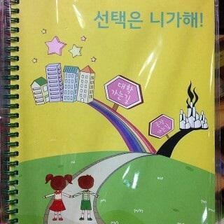
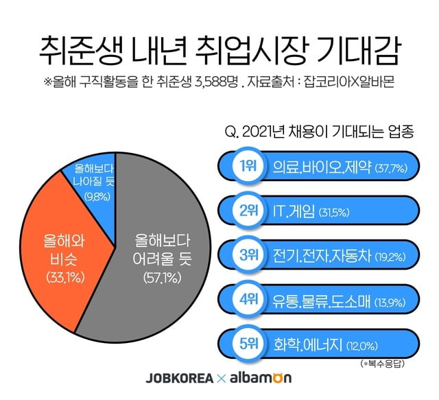
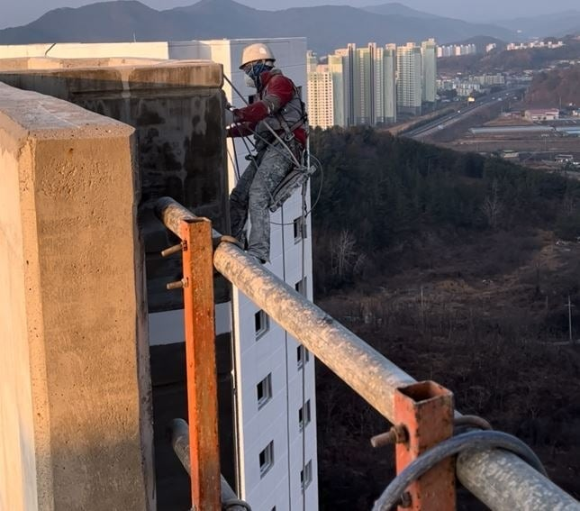

어린시절 자아 형성시기부터 성인이 되기 직전까지 약 20년동안
공교육을 이용해 상위 10퍼센트의 무언가에 들지 못하면
망한 인생이라고 뇌속에 문신처럼 박아두기

그렇게 사회에 배출 하자 마자
대부분의 인원을 지방대 or 취업 장수생 으로 만들고
소위 말하는 '망한 인생' 의 카테고리에 넣어주기
대기업, 공무원, 공기업 못가면 '망한 인생' 이라고
수많은 사람들을 취업 장수생 or 좆소 패배자로 만들기

어쩌다 이렇게 병든건지 모르겠다
누군가는 페인트질을 해야하고, 누군가는 핸드폰을 팔아야하고
결국 누군가는 건물을 지어 올려야하는건데
가끔 생각해보면 모두가 불행해지도록 설계된 사회같음
나도 해외살이 하면서 여러 직업을 다 가져봤지만
나이 서른가까이 먹고 발렛도 뛰고 경비도 뛰고 하면서
부끄러운거 하나도 없었다. 다들 자기 직업에대한 자부심이 있었으니까
돈을 어떻게 벌어오건 자기 가족들 먹여살리고
떳떳하게 살 수 있으면 그게 멋진 인생인건데
처자식 먹여살리려고 일하는 사람들이 왜 천민 취급 받는건지 모르겠음
진짜 진지하게 자살율 줄이고 싶으면
쉬었음, 숨고르기 같은 단어놀이 하면서 염병떨지 말고
애초에 기초 교육과정에서 이 뒤틀린 한국식
성공한 인생의 프레임부터 부셔버려야함
그냥 어디든지 급을 나누고 갈라치기하는게 인간본성인듯 그게 익명성안에서 극대화되는게 커뮤니티들이고